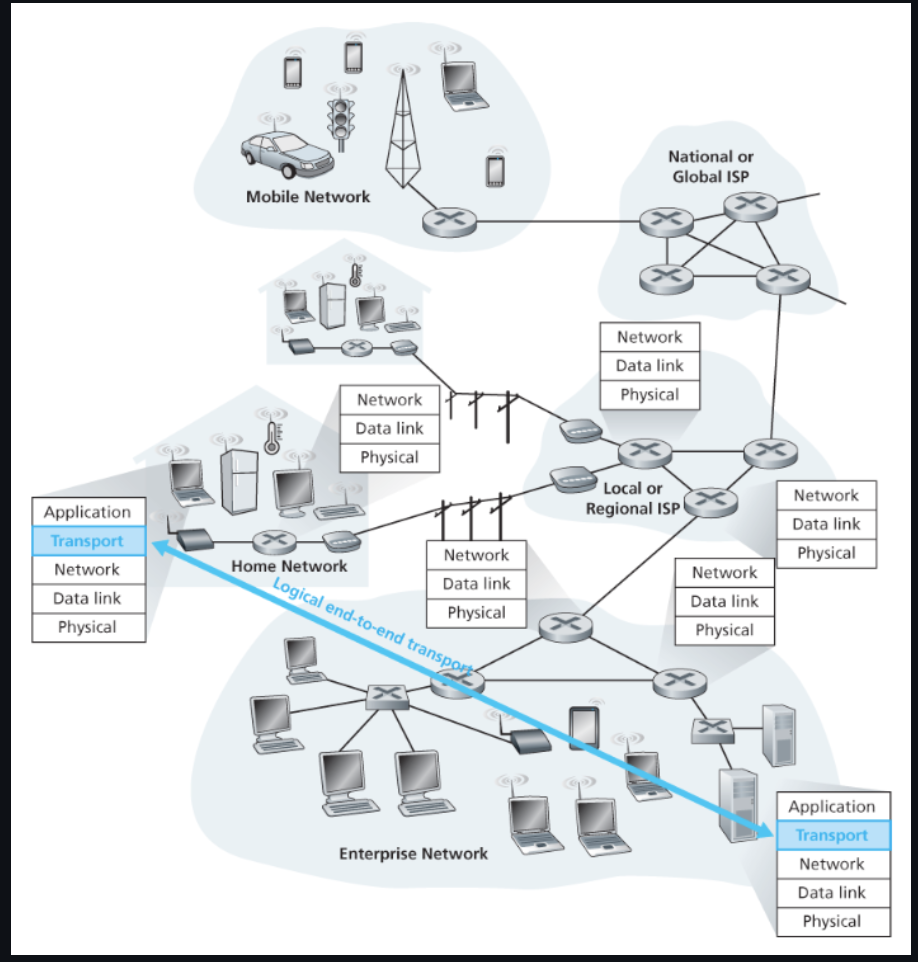
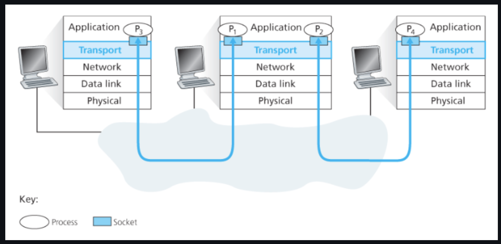
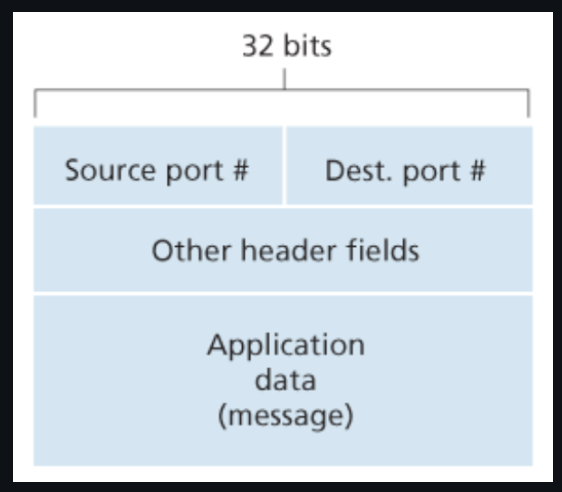
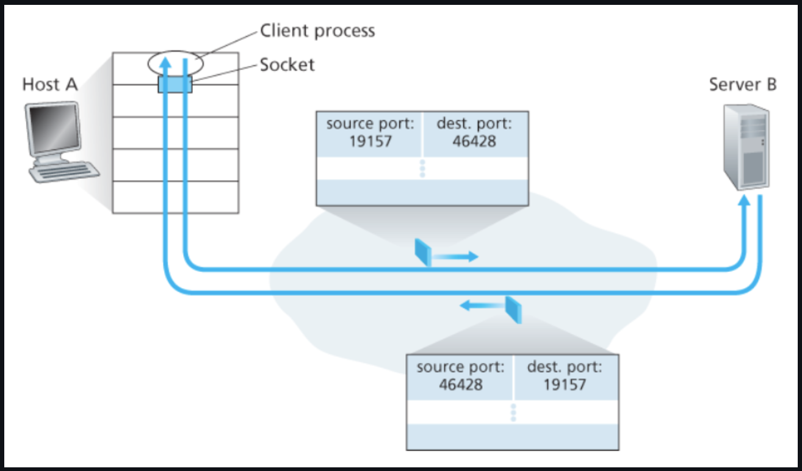
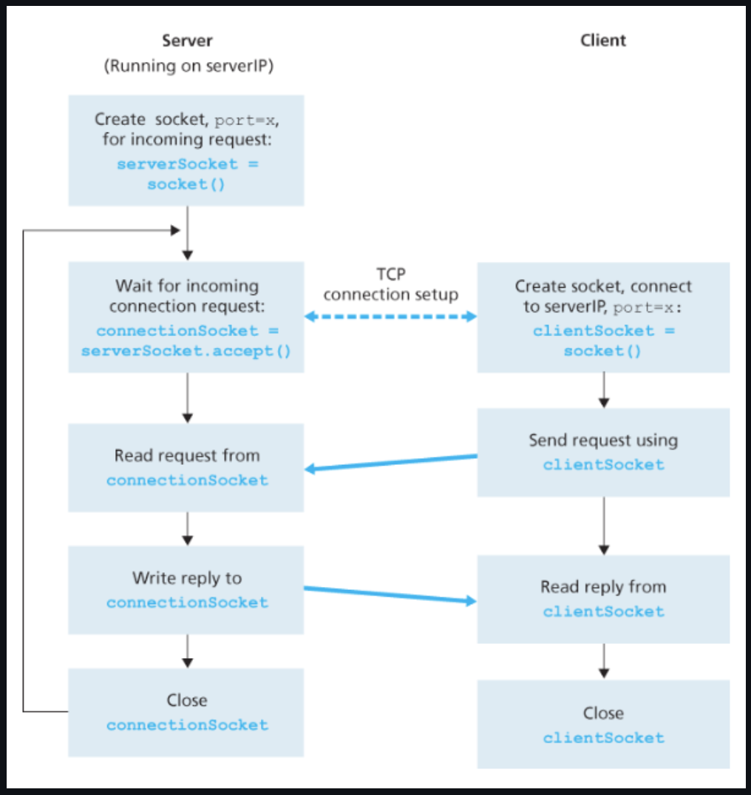
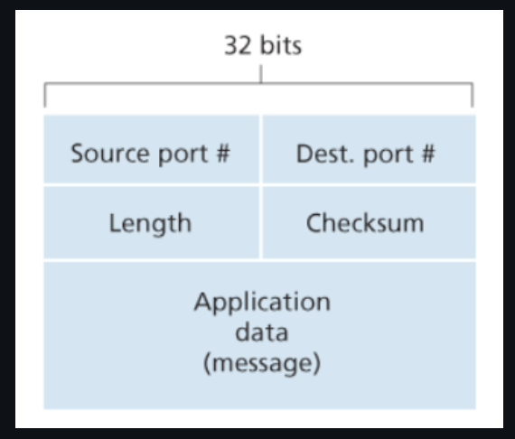
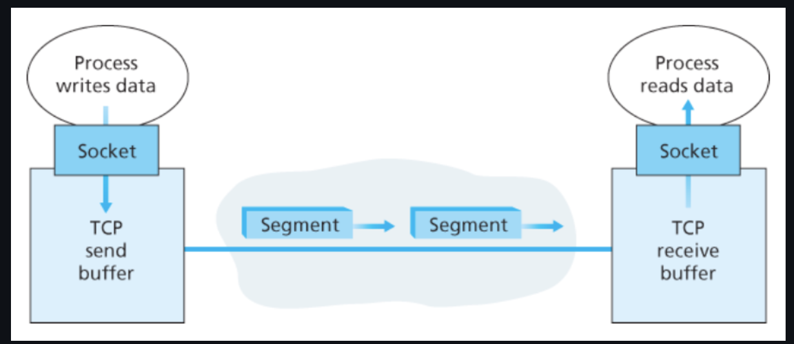
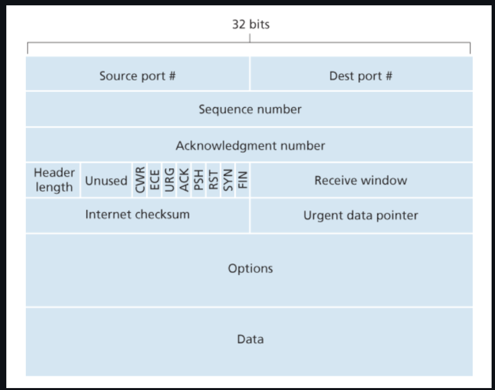

아래 그림처럼, 트랜스포트 계층 프로토콜은 네트워크 라우터가 아닌 종단 시스템에서 구현된다.

송신 측의 트랜스포트 계층은 송신 애플리케이션 프로세스로부터 수신한 메시지를 트랜스포트 계층 패킷으로 변환한다.
(이는 트랜스포트 계층 세그먼트(segment)라고 부른다. : L4-PDU)
애플리케이션 메시지를 작은 조각으로 분할한다.
각각의 조각에 트랜스포트 계층 헤더를 추가한다.
트랜스포트 계층은 송신 종단 시스템에 있는 네트워크 계층으로 세그먼트를 전달한다.
세그먼트는 네트워크 계층 패킷(데이터그램(datagram) : L3-PDU) 안에 캡슐화되어(encapsulate) 목적지로 전달된다.
네트워크 라우터는 오로지 데이터그램의 네트워크 계층 필드에 대해 동작한다.
즉, 데이터그램 안에 캡슐화된 트랜스포트 계층 세그먼트의 필드를 검사하지 않는다.
수신 측에서 네트워크 계층은 데이터그램으로부터 트랜스포트 계층 세그먼트를 추출하고 트랜스포트 계층으로 세그먼트를 보낸다.
트랜스포트 계층은 수신 애플리케이션에서 세그먼트 내부의 데이터를 이용할 수 있도록 수신된 세그먼트를 처리한다.
네트워크 애플리케이션에서는 하나 이상의 트랜스포트 계층 프로토콜을 사용할 수 있다.
e.g., 인터넷 : TDP, UDP라는 두 가지 프로토콜을 가지고 있다.
TCP & UDP
Transmission Control Protocol, TCP
신뢰적이고 연결지향형 서비스를 제공한다. (reliable data transfer)
혼잡 제어(congestion control) : 혼잡한 네트워크 링크에서 각 TCP 연결이 링크의 대역폭을 공평하게 공유하여 통과하도록 해준다.
User Datagram Protocol, UDP
비신뢰적이고 비연결형인 서비스를 제공한다.
UDP 트랜스포트 프로토콜을 사용하는 애플리케이션은 허용이 되는 한, 그것이 만족하는 어떤 속도로든 전송할 수 있다.
세그먼트와 데이터그램
세그먼트(segment) : 트랜스포트 계층 패킷을 일컫는 말
TCP에 대한 패킷을 세그먼트(segment), UDP에 대한 패킷을 데이터그램(datagram)이라는 용어로 나타내기도 한다.
이 책에서는 TCP와 UDP 패킷을 모두 세그먼트라고 지칭, 네트워크 계층 패킷에 대해서는 데이터그램이라는 용어를 사용한다.
인터넷 프로토콜(Internet Protocol, IP)
인터넷의 네트워크 계층 프로토콜
IP 서비스 모델은 호스트들 간에 논리적 통신을 제공하는 최선형 전달 서비스(best-effort delivery service)
즉, IP가 통신하는 호스트들 간에 세그먼트를 전달하기 위해 최대한 노력하지만, 어떤 보장도 하지 않는다.
세그먼트의 전달 보장 X
순서 보장 X
내부 데이터의 무결성(integrity) 보장 X
→ IP는 비신뢰적인 서비스(unreliable service)이다.
각 호스트는 적어도 하나의 IP 주소를 갖고 있다.
UDP와 TCP의 서비스 모델
트랜스포트 계층 다중화(transport-layer mulitplexing)와 역다중화(demultiplexing)
‘호스트 대 호스트 전달’ → ‘프로세스 대 프로세스 전달’
종단 시스템 사이의 IP 전달 서비스를 / 종단 시스템에서 동작하는 두 프로세스 간의 전달 서비스로 확장한다.
헤더에 오류 검출 필드를 포함
이로써 무결성 검사를 제공한다.
다중화와 역다중화
목적지 호스트에서의 트랜스포트 계층은 바로 아래의 네트워크 계층으로부터 세그먼트를 수신한다.
트랜스포트 계층은 호스트에서 동작하는 해당 애플리케이션 프로세스에게 이 세그먼트의 데이터를 전달하는 의무를 가진다.
트랜스포트 계층은 세그먼트(데이터)를 중간 매개자인 소켓(socket)에게 전달한다.
프로세스는 네트워크 애플리케이션의 한 부분으로서 소켓을 가지고 있다.
이는 네트워크에서 프로세스로, 한 프로세스로부터 네트워크로 데이터를 전달하는 출입구 역할을 한다.
각각의 소켓은 하나의 유일한 식별자, 포트 번호(port number)를 가진다.

각각의 트랜스포트 계층 세그먼트는 세그먼트에 필드 집합을 가지고 있으며,
트랜스포트 계층은 수신 소켓을 식별하기 위해 이러한 필드를 검사한 후 해당 소켓으로 보낸다.
역다중화(demultiplexing)
트랜스포트 계층 세그먼트의 데이터를 올바른 소켓으로 전달하는 작업을 말한다.
다중화(multiplexing)
출발지 호스트에서 소켓으로 부터 데이터를 모으고,
이에 대한 세그먼트를 생성하기 위해 각 데이터에 헤더 정보로 캡슐화(encapsulation) 한다.
그 세그먼트들을 네트워크 계층으로 전달한다.
트랜스포트 계층 다중화의 두 가지 요구사항
소켓은 유일한 식별자를 갖는다. (= 포트 번호)
각 세그먼트는 세그먼트가 전달될 적절한 소켓을 가리키는 특별한 필드를 갖는다.
출발지 포트 번호 필드(source port number field)
목적지 포트 번호 필드(destination port number field)

역다중화 서비스의 순서
호스트의 각 소켓은 포트 번호를 할당받는다.
세그먼트가 호스트에 도착하면,
트랜스포트 계층은 세그먼트 안의 목적지 포트 번호를 검사하고,
그에 상응하는 소켓으로 세그먼트를 보낸다.
세그먼트의 데이터는 소켓을 통해 해당되는 프로세스로 전달된다.
이는 UDP의 기본적인 동작 방식과 같다.
비연결형 다중화와 역다중화
UDP 소켓은 목적지 IP 주소와 목적지 포트 번호로 구성된 두 요소로 된 집합에 의해 식별된다.
따라서 만약 2개의 UDP 세그먼트가 같은 목적지 IP 주소와 목적지 포트 번호를 가진다면,
이 2개의 세그먼트는 같은 목적지 소켓을 통해 같은 프로세스로 향할 것이다.
그렇다면 출발지 포트 번호는 무슨 목적으로 사용되는가?
출발지 포트 번호는 ‘회신 주소’의 한 부분으로 사용된다.
아래 그림처럼, B가 A에게로 세그먼트를 보내기를 원할 때
B에서 A로 가는 세그먼트의 목적지 포트 번호는 A로부터 B로 가는 세그먼트의 출발지 포트 번호로부터 가져온다.

연결지향형 다중화와 역다중화
TCP 소켓
TCP 소켓은 4개 요소의 집합(four-tuple)에 의해 식별된다.
출발지 IP 주소
출발지 포트 번호
목적지 IP 주소
목적지 포트 번호
특히, 다른 출발지 IP 주소 또는 다른 출발지 포트 번호를 가지고 도착하는 2개의 TCP 세그먼트는 2개의 다른 소켓으로 향하게 된다.
(초기 연결 설정 요청을 전달하는 TCP는 제외)
TCP 연결 설정
TCP 서버 애플리케이션은 환영(welcome) 소켓을 갖고 있다.
이 소켓은 포트 번호 12000을 가진 TCP 클라이언트로부터 연결 설정 요청을 기다린다.

TCP 클라이언트는 소켓을 생성하고, 연결 설정 요청 세그먼트를 보낸다.
연결 설정 요청은 목적지 포트 번호 12000과 TCP 헤더에 설정된 특별한 연결 설정 비트(3.5절에서 설명)를 가진 TCP 세그먼트를 통해 보내진다.
이 세그먼트는 출발지 포트 번호를 포함하는데, 이것은 클라이언트가 선택한 번호이다.
서버 프로세스로 동작하는 컴퓨터의 호스트 운영체제가 목적지 포트 12000을 포함하는 연결 요청 세그먼트를 수신하면,
이 세그먼트를 포트 번호 12000으로 연결 수락을 기다리는 서버 프로세스로 보낸다.
서버는 연결 요청 세그먼트의 4개 요소의 집합에 주목한다.
서버 호스트는 동시에 존재하는 많은 TCP 소켓을 지원할 수 있다.
새롭게 생성된 연결 소켓은 4개 요소의 집합의 네 가지 값에 의해 식별된다.
따라서 그다음에 도착하는 세그먼트의 출발지 포트, 출발지 IP 주소, 목적지 포트, 목적지 IP 주소가 전부 일치하면,
그 세그먼트는 이 소켓으로 역다중화될 것이다.
Persistent & Non-persistent HTTP
지속적인(persistent) HTTP
지속적인 연결의 존속 기간에 클라이언트와 서버는 같은 서버 소켓을 통해 HTTP 메시지를 교환한다.
비지속적인(non-persistent) HTTP
모든 요청/응답마다 새로운 TCP 연결이 생성되고 종료된다.
UDP의 장점
많은 애플리케이션은 다음과 같은 이유로 UDP에 더 적합하다.
무슨 데이터를 언제 보낼지에 대해서 애플리케이션 레벨에서 더 정교한 제어가 가능하다
UDP 하에서 애플리케이션 프로세스가 데이터를 UDP에 전달하자마자
UDP는 데이터를 UDP 세그먼트로 만들고, 그 세그먼트를 즉시 네트워크 계층으로 전달한다.
실시간 애플리케이션에서는 UDP를 사용하고, 필요한 어떤 추가 기능을 구현할 수 있다.
↔︎ TCP
혼잡 제어 매커니즘이 존재한다.
즉, 목적지 호스트들과 출발지 호스트들 사이에서 하나 이상의 링크가 과도하게 혼잡해지면 트랜스포트 계층 TCP 송신자를 제한한다.
신뢰적인 전달이 얼마나 오래 걸리는지에 관계없이
목적지가 세그먼트의 수신 여부를 확인응답할 때까지 데이터의 세그먼트 재전송을 계속한다.
연결 설정이 없다
UDP는 TCP의 세 방향 핸드셰이크(three-way handshake)와 같은 공식적인 사전준비 없이 전송한다.
따라서 UDP는 연결을 설정하기 위한 어떤 지연도 없다.
연결 상태가 없다
UDP는 연결 상태를 유지하지 않으며, 연결 상태에 대한 그 어떠한 파라미터도 기록하지 않는다.
따라서 일반적으로 특정 애플리케이션 전용 서버는 애플리케이션 프로그램이 UDP에서 동작할 때
좀 더 많은 액티브 클라이언트를 수용할 수 있다.
작은 패킷 헤더 오버헤드
TCP는 세그먼트마다 20바이트의 헤더 오버헤드를 갖지만, UDP는 단지 8바이트의 오버헤드를 갖는다.
UDP의 단점
UDP는 혼잡 제어(congestion control)를 하지 않는다.
혼잡 제어는 네트워크가 꼭 필요한 작업을 할 수 없게 되는 폭주 상태에 빠지는 것을 막기 위해 반드시 필요하다.
만약 모두가 혼잡 제어를 사용하지 않고 높은 비트의 비디오 스트리밍을 시작한다면,
라우터에 많은 패킷 오버플로가 발생
→ 소수의 UDP 패킷만이 출발지-목적지 간의 경로를 무사히 통과할 것이다.
제어되지 않은 UDP 송신자에 의해 발생한 높은 손실률은 그 손실률을 감소시키기 위해 TCP 송신자들이 속도를 줄이도록 할 것
→ TCP 세션의 혼잡이 발생할 것이다.
UDP를 통한 신뢰적인 데이터 전송
UDP는 비신뢰적인 서비스를 제공하지만,
애플리케이션 자체에서 신뢰성을 제공한다면 UDP를 사용하면서 신뢰적인 데이터 전송이 가능해진다.
e.g., 구글의 크롬 브라우저에서 사용되는 QUIC(Quick UDP Internet Connection) 프로토콜
이는 기본 트랜스포트 프로토콜로 UDP를 사용하고, UDP 위에 애플리케이션 계층 프로토콜의 안정성을 구현한다.
UDP 세그먼트 구조

애플리케이션 데이터
UDP 데이터그램의 데이터 필드에 위치한다.
포트 번호
목적지 호스트가 목적지 종단 시스템에서 동작하는 (역다중화 기능을 수행하는) 정확한 프로세스에게 애플리케이션 데이터를 넘기게 해준다.
체크섬(checksum)
세그먼트에 오류가 발생했는지 검사하기 위해 수신 호스트가 사용한다.
길이 필드
헤더를 포함하는 UDP 세그먼트의 길이를 바이트 단위로 나타낸다.
UDP 체크섬
UDP 체크섬은 세그먼트가 출발지로부터 목적지로 이동했을 때,
UDP 세그먼트 안의 비트에 대한 변경사항이 있는지 검사하여 오류 검출을 하기 위한 것이다.
송신자 측에서 세그먼트 안에 있는 모든 16비트 워드의 합산에 대해 다시 1의 보수를 수행하며,
합산 과정에 발생하는 오버플로는 윤회식 자리올림(wrap around)을 한다.
이 결과값이 UDP 세그먼트의 체크섬 필드에 삽입된다.
수신자에서는 체크섬을 포함한 모든 16비트 워드들이 더해진다.
만약 패킷에 어떤 오류도 없다면 수신자에서의 합은 1111111111111111이 되며,
비트 중에 0이 하나라도 있다면 패킷에 오류가 발생했다는 것이다.
UDP는 왜 체크섬을 제공하는가?
출발지와 목적지 사이의 모든 링크가 오류 검사를 제공한다는 보장이 없기 때문이다.
따라서 세그먼트들이 정확하게 링크를 통해 전송되었을지라도, 세그먼트가 라우터의 메모리에 저장될 때 비트 오류가 발생할 수가 있다.
UDP는 오류 검사를 제공하지만, 오류를 회복하기 위한 어떤 일도 하지 않는다.
손상된 세그먼트를 그냥 버리기도 하고, 경고와 함께 손상된 세그먼트를 애플리케이션에게 넘겨주기도 한다.
(처리 방식은 구현에 따라서 다름)
주어진 링크 간의 신뢰성과 메모리의 오류 검사가 보장되지도 않고, 종단 간의 데이터 전송 서비스가 오류 검사를 제공해야 한다면
UDP는 종단 기반으로 트랜스포트 계층에서 오류 검사를 제공해야만 한다.
→ 이것은 종단과 종단의 원칙(end-end principle)의 한 예시이다.
종단과 종단의 원칙(end-end principle)
하위 레벨에 있는 기능들은 상위 레벨에서 이들을 제공하는 비용과 비교했을 때 중복되거나 거의 가치가 없을 수 있다.
연결지향형 트랜스포트: TCP
TCP 연결
TCP는 애플리케이션 프로세스가 데이터를 다른 프로세스에게 보내기 전에,
두 프로세스가 서로 ’핸드셰이크’를 먼저 해야 하므로 연결지향형(connection-oriented)이다.
즉, 데이터 전송을 보장하는 파라미터들을 각자 설정하기 위한 어떤 사전 세그먼트들을 보내야 한다.
TCP 연결은 두 통신 종단 시스템의 TCP에 존재하는 상태를 공유하는 논리적인 것이다.
TCP 연결은 전이중 서비스(full-duplex service)를 제공한다.
만약 호스트 A의 프로세스와 호스트 B의 프로세스 사이에 TCP 연결이 있다면,
애플리케이션 계층 데이터는 B에서 A로 흐르는 동시에 A에서 B로 흐를 수 있다.
TCP 연결은 항상 단일 송신자와 단일 수신자 사이의 점대점(point-to-point)이다.
단일 송신 동작으로 한 송신자가 여러 수신자에게 데이터를 전송하는 ‘멀티캐스팅(multicasting)’은 TCP에서는 불가능하다.
TCP 연결 과정
클라이언트 프로세스(client process) : 연결을 초기화하는 프로세스
서버 프로세스(server process)
세 방향 핸드셰이크(three-way handshake)
클라이언트 애플리케이션 프로세스는 서버의 프로세스와 연결을 설정하기를 원한다고 TCP 클라이언트에게 먼저 알린다.
클라이언트의 트랜스포트 계층은 서버의 TCP와의 TCP 연결 설정을 진행한다.
즉, 클라이언트가 먼저 특별한 TCP 세그먼트를 보낸다.
서버는 두 번째 특별한 TCP 세그먼트로 응답한다.
마지막으로, 클라이언트가 세 번째 특별한 세그먼트로 다시 응답한다.
처음 2개의 세그먼트에는 페이로드(payload, 애플리케이션 계층 데이터)가 없다.
세 번째 세그먼트는 페이로드를 포함할 수 있다.
TCP 연결이 설정된 이후
일단 TCP 연결이 설정되면, 두 애플리케이션 프로세스는 서로 데이터를 보낼 수 있다.
클라이언트 프로세스는 소켓(프로세스의 관문)을 통해 데이터의 스트림을 전달한다.
데이터가 관문을 통해 전달되면, 이제 데이터는 클라이언트에서 동작하고 있는 TCP에 맡겨진다.
TCP는 초기 세 방향 핸드셰이크 동안 준비된 버퍼 중의 하나인 연결의 송신 버퍼(send buffer)로 데이터를 보낸다.
때때로 TCP는 송신 버퍼에서 데이터 묶음을 만들어서 네트워크로 보낸다. (TCP가 언제 버퍼된 데이터를 전송해야 하는지는 정해져 있지 않음)
최대 세그먼트 크기(maximum segment size, MSS)
세그먼트로 모아 담을 수 있는 최대 데이터 양은 최대 세그먼트 크기(maximum segment size, MSS)로 제한된다.
MSS를 결정하는 요소
로컬 송신 호스트에 의해 전송될 수 있는 가장 큰 링크 계층 프레임의 길이
최대 전송 단위(maximum transmission unit, MTU)
TCP 세그먼트(IP 데이터그램 안에 캡슈화되었을 때)와 TCP/IP 헤더 길이(통상 40바이트)가 단일 링크 계층 프레임에 딱 맞도록 함
MSS는 헤더를 포함하는 TCP 세그먼트의 최대 크기가 아니라, 세그먼트에 있는 애플리케이션 계층 데이터에 대한 최대 크기이다.
TCP 세그먼트(TCP segment)
TCP 헤더 + 클라이언트 데이터

네트워크 계층에 전달되어 네트워크 계층 IP 데이터그램 안에 각각 캡슐화됨
세그먼트는 네트워크로 송신됨
TCP가 상대에게서 세그먼트를 수신했을 때, 세그먼트의 데이터는 TCP 연결의 수신 버퍼에 위치함
→ 애플리케이션은 이 버퍼로부터 데이터의 스트림을 읽음
TCP 세그먼트 구조

구조
헤더 필드
s
출발지와 목적지 포트 번호(source and destination port number)
체크섬 필드(checksum field)
32비트 순서 번호 필드(sequence number field)
32비트 확인응답 번호 필드(acknowledgement number field)
16비트 수신 윈도(receive window) : 흐름 제어에 사용된다.
(수신자가 받아들이려는 바이트의 크기를 나타내는데 사용됨)
4비트 헤더 길이 필드(header length field) : 32비트 워드 단위로 TCP 헤더의 길이를 나타낸다.
옵션 필드(option field)
이 필드는 선택적이고 가변적인 길이를 가진다.
송신자와 수신자가 최대 세그먼트 크기(MSS)를 협상하거나 고속 네트워크에서 사용하기 위한 윈도 확장 요소로 이용된다.
플래그 필드(flag field) : 6비트를 포함한다.
ACK 비트 : 확인응답 필드에 있는 값이 유용함을 가리키는 데 사용된다.
RST, SYN, FIN 비트 : 연결 설정과 해제에 사용된다.
PSH 비트 : 이 비트가 설정되었다면 이것은 수신자가 데이터를 상위 계층에 즉시 전달해야 함을 가리킨다.
URG 비트
이 세그먼트에서 송신 측 상위 계층 개체가 ‘긴급’으로 표시하는 데이터임을 가리킨다.
이 긴급 데이터의 마지막 바이트의 위치는 16비트의 긴급 데이터 포인터 필드(urgent data pointer field)에 의해 가리켜진다.